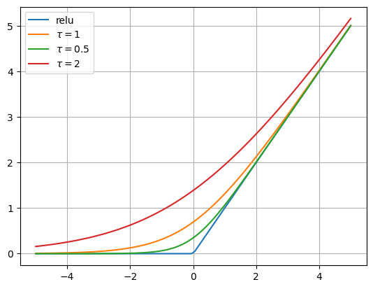

各种函数的hard与soft形式
max 与 logsumexp
一个常见的误解是：\(\text{softmax}\) 是 \(\max\) 的 soft 版本，但其实稍微想一下就知道这是不对的——\(\max\) 函数的输出是一个实数，而 \(\text{softmax}\) 的输出是一个向量，一个向量怎么可能去近似一个实数呢？
事实上，\(\max\) 函数的 soft 版本是 \(\text{logsumexp}\) 函数： \[ \text{logsumexp}(\vec{x};\tau)=\tau\log\sum_{i=1}^n\exp(x_i/\tau) \] 其中温度系数 \(\tau\) 越小，\(\text{logsumexp}\) 越接近 \(\max\).
证明：由于 \[\begin{align}\tau\log\sum_{i=1}^n\exp(x_i/\tau)&\leq\tau\log\sum_{i=1}^n\exp(\vec{x}_\max/\tau)\\&=\tau\log(n\exp(\vec{x}_\max /\tau))\\&=\tau\log n+\vec{x}_\max\\&\to \vec{x}_\max\quad(\tau \to 0)\end{align}\] 又 \[\tau\log\sum_{i=1}^n\exp(x_i/\tau)\geq\tau\log[\exp(\vec{x}_\max/\tau)]=\vec{x}_\max\] 所以根据夹逼定理， \[\lim_{\tau \to 0} \text{logsumexp}(\vec{x};\tau)=\lim_{\tau\to 0}\tau\log\sum_{i=1}^n\exp(x_i/\tau)=\vec{x}_\max\]
类似的，添加一个负号，\(\text{logsumexp}\) 成为 \(\min\) 的平滑近似： \[ \text{logsumexp}(\vec{x};-\tau)=-\tau\log\sum_{i=1}^n\exp(-x_i/\tau) \]
说句题外话，在许多科学计算包中，\(\text{logsumexp}\) 已经被封装为了一个函数，为了避免数值计算问题应尽可能调用它而不是自己从头写一遍。
onehot 与 softmax
考虑到 \(\text{softmax}\) 是一个概率向量，即所有维度相加为一，因此它的 hard 版本自然是 \([0,\ldots,1,\ldots,0]\) 的形式，也即 \(\text{onehot}\) 向量。因此，\(\text{softmax}\) 是 \(\text{onehot}(\text{argmax})\) 的平滑近似。 \[ \text{softmax}(\vec{x};\tau)_i=\frac{\exp(x_i/\tau)}{\sum_{j=1}^n\exp (x_j/\tau)} \] 其中温度系数 \(\tau\) 越小，\(\text{softmax}\) 越接近 \(\text{onehot}\).
另外，\(\text{softmax}\) 与 \(\text{logsumexp}\) 有如下关系： \[ \log\text{softmax}(\vec{x};\tau)_i=x_i/\tau-\log\sum_{j=1}^n\exp(x_j/\tau)=x_i/\tau-\text{logsumexp}(\vec{x};\tau) \]
argmax
鉴于 \(\text{argmax}\) 是一个臭名昭著的不可导操作，我们非常希望找到它的可导 soft 形式。由于 \(\text{argmax}\) 可以写作： \[ \text{argmax}(\vec{x})=\sum_{i=1}^n i\times \text{onehot}(\text{argmax}(\vec{x}))_i \] 利用上一小节的结论，将 \(\text{onehot}(\text{argmax})\) 替换为 \(\text{softmax}\) 得到： \[ \text{argmax}(\vec{x})\approx \sum_{i=1}^ni\times \text{softmax}(\vec{x};\tau)_i =\frac{1}{\sum_{j=1}^n e^{x_j/\tau}}\sum_{i=1}^ni\times e^{x_i/\tau} \] 即用 \(\text{softmax}\) 向量对下标做加权平均。
relu 与 softplus
由于 \(\text{relu}\) 可以用 \(\max\) 写出来，因此利用 \(\max\) 的平滑近似 \(\text{logsumexp}\)，我们可以推导出 \(\text{relu}\) 的平滑近似，称为 \(\text{softplus}\)： \[ \begin{align} &\text{relu}(x)=\max(0, x)\\ &\text{softplus}=\tau\log(1+e^{x/\tau}) \end{align} \] 
References
- 苏剑林. (May. 02, 2015). 《寻求一个光滑的最大值函数 》[Blog post]. Retrieved from https://spaces.ac.cn/archives/3290 ↩︎
- 如何理解与看待在cvpr2020中提出的circle loss？ - 王峰的回答 - 知乎 https://www.zhihu.com/question/382802283/answer/1114719159 ↩︎
- 苏剑林. (May. 20, 2019). 《函数光滑化杂谈：不可导函数的可导逼近 》[Blog post]. Retrieved from https://spaces.ac.cn/archives/6620 ↩︎